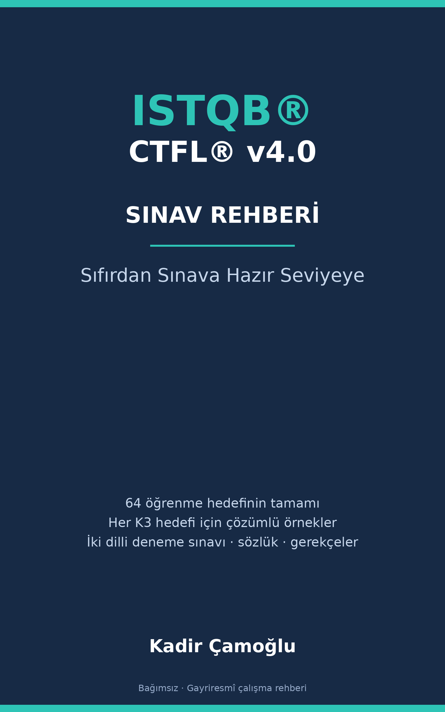

ISTQB® CTFL® v4.0 Sınav Rehberi: Sıfırdan Sınava Hazır Seviyeye

Bağımsız · Gayriresmî çalışma rehberi — ISTQB® ya da Turkish Testing Board (TTB) ile bağlantılı değildir, onlar tarafından onaylanmamıştır
ISTQB® Sertifikalı Test Uzmanı Temel Seviye Ders Programı v4.0’ın 64 öğrenme hedefinin tamamını kapsar (teknik temel: v4.0.1 düzeltmeleri) — her K3 hedefi için çözümlü örneklerle
Sınavın gerçekte neyi ölçtüğü üzerine kuruldu. Hiç başlamamış biri için okunabilir, deneyimli bir test uzmanı için doğru.
Kadir Çamoğlu
| Baskı | Birinci baskı (herkese açık taslak) |
| Kapsanan sınav | ISTQB® Sertifikalı Test Uzmanı Temel Seviye (CTFL®) |
| Ders programı | CTFL® Ders Programı v4.0 (Nisan 2023); teknik temel v4.0.1 (düzeltme sürümü; ÖH ifadeleri ve terimler buna göre). Türkçe ifadeler: TTB Türkçe ders programı v4.0.1 |
| Sınav yapısı kaynağı | ISTQB® Exam Structure Tables v1.18 · Exam Structures and Rules v1.2 |
| Kapsanan biçim | 40 soru · 60 dakika · geçme notu 26/40 (%65) · TTB sınavında soru kitapçığı Türkçe ve İngilizce (ayrıntı: CTFL® Sınavı Nasıl İşler) |